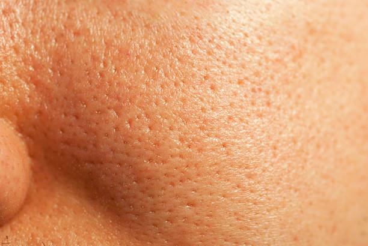
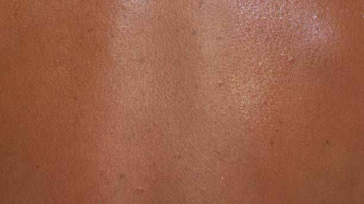
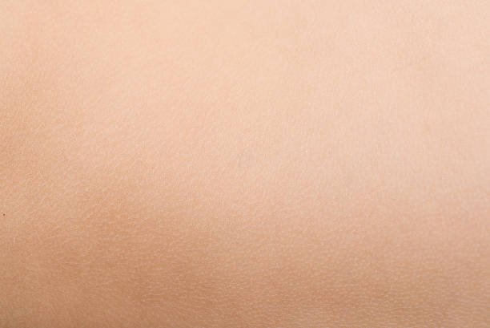

The first step to getting a solid skincare routine is identfying what type of skin you have. This guide will help you get one step closer to that beautifully nourished skin.
Dry Skin
Dry skin can be caused by issues with the skin’s natural moisture barrier, or by external factors such as cold weather and excessive washing.
Oily Skin
Oily skin is typically the result of excess sebum production. This is most widely attributed to internal rather than external biological factors.
Combination Skin
Combination skin is characterized by two areas: oily and normal or dry skin. Typically, combination skin presents as an oily T-zone the forehead, nose and chin with dry skin elsewhere on the face.
Normal Skin
Normal skin is essentially skin that is well balanced; it is not too dry or oily, not too sensitive and has very few imperfections.